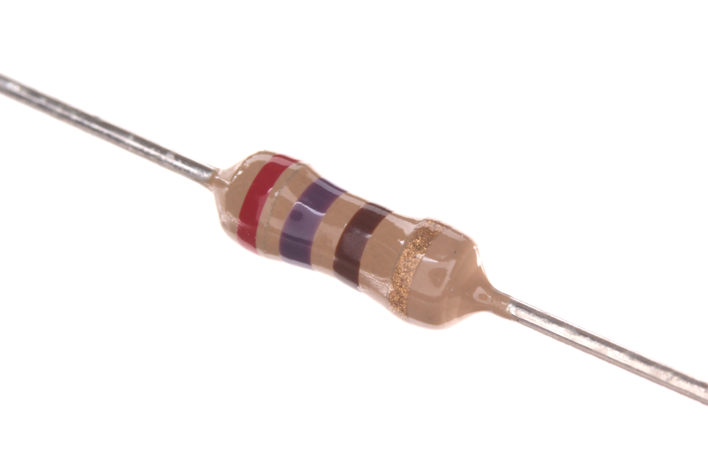

Les 1: Inleiding
Arduino
Arduino is een open source platform van microcontrollers. Een microcontroller is een soort computer waar maar 1 programma op draait dit in tegenstelling tot een Raspberry Pi of de computer waarop je dit leest.
Dit heeft verschillende voordelen zoals:
- Energiezuinig
- Geen ingewikkeld besturingssysteem
- Geen overbodige code
Op het moment van schrijven is de Arduino Uno de meest gebruikte Arduino microcontroller die gebruikt wordt. De Arduino Uno heeft verschillende poorten die gebruikt kunnen worden in je project. Deze poorten zijn te verdelen in drie categorieën:
- Digitale pinnen
- Analoge pinnen
- Energie/power pinnen
BreadBoard
Een breadboard is een plankje waar je componenten en draden kan insteken om de Arduino aan sensoren en verschillende outputs te koppelen. De meeste breadboards hebben 2 energierijen, waarvan er 1 grond/negatief is en 1 positief. Deze zijn meestal te herkennen aan de kleur en de + en - symbolen.
Op het breadboard zitten ook gewone rijen, deze zijn met elkaar verbonden tot de helft van het breadboard. Als we het bovenstaande breadboard als voorbeeld nemen, dan zijn rij 1 en kolom A B C D E met elkaar verbonden en rij 1 F G H I J, maar rij 1 E en F niet.

Componenten
De volgende componenten worden gebruikt in deze les:
| 1x Arduino Uno |  |
1x Breadboard | |
| 1x Weerstand van 270 Ohm |  | 1x LED |  |
Hello Blink
Voor de eerste les ga je Hello Blink maken. Hello Blink staat gelijk aan Hello World van andere programmeertalen. Dit is het eerste wat je maakt in een programmeertaal.
Voor dit programma is de volgende elektrische schakeling nodig, deze is hiernaast weergegeven.
Een lampje ookwel LED genoemd, word verbonden met twee draadjes met de Arduino, waarbij op de positieve draad een weerstand van 220 of 270 ohm wordt gebruikt. Als deze niet wordt gebruikt dan bestaat de kans dat het lampje doorbrand. Het lampje wordt aan de positieve kant verbonden met een digitale poort, meestal is dit poort 13, de negatieve kant wordt verbonden met de grond. Dit zijn de GND poorten op de Arduino.
De LED heeft twee pootjes waaraan de draadjes kunnen worden verbonden. Het lange pootje van de LED is de positieve kant, het korte pootje is de negatieve kant.
De opdracht
De bedoeling is dat je het lampje elke seconde laat knipperen, waarbij jijzelf de Arduino moet programmeren.